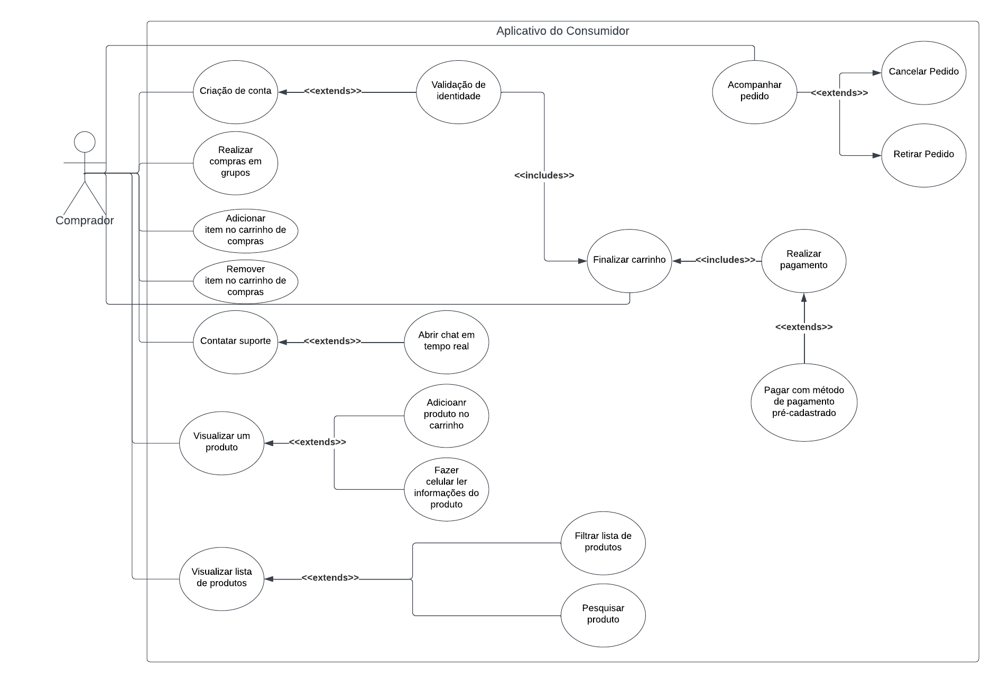
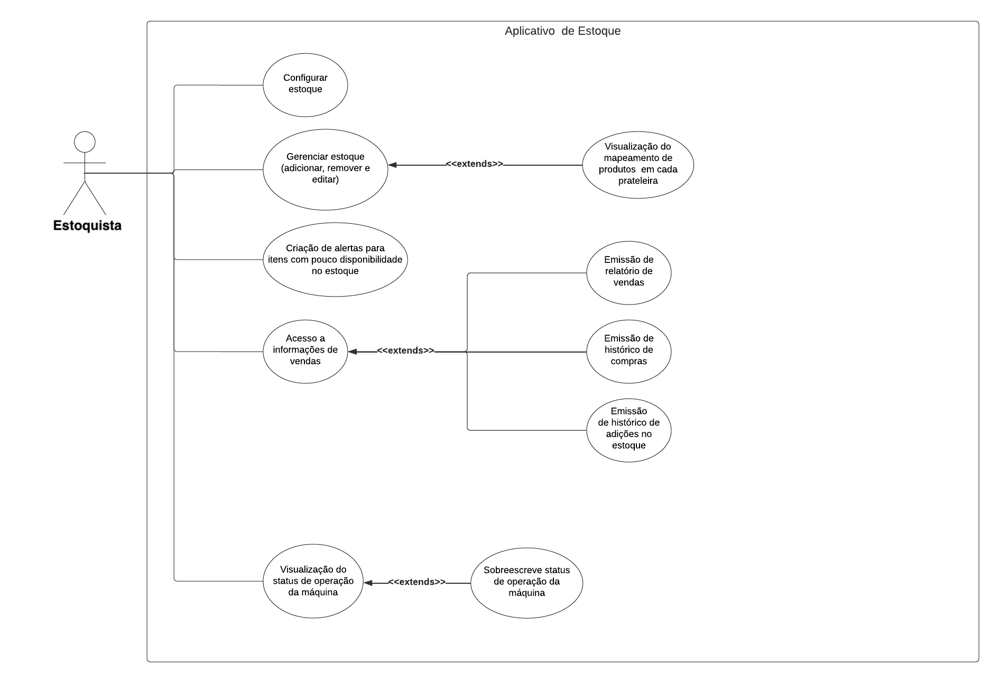

Documento de Requisito
Diagrama de Casos de Uso
O diagrama de casos de uso [2] descreve um conjunto de ações, chamados de casos de uso, que um sistema desempenha, levando em consideração os usuários externos ao sistema. Ele pode ser usado para descrever as principais funcionalidades do sistema e a interação com os usuários.
Para a criação desse artefato foi utilizado a abordagem tradicional, ou seja, representação os casos de uso através de uma diagrama UML[1]. A ferramenta utilizada para a criação do diagrama foi o LucidChart [3], um software online para criação de diagramas.
v2.0
 
v1.0
{kind=link}
A seguir, a especificação dos casos de uso identificados.
UC01. Visualizar lista de produtos
| UC01 | Visualizar lista de produtos |
|---|---|
| Atores | |
| Frequência de uso | Alta |
| Requisitos | Acesso à internet e conta criada |
| Condição de entrada | Usuário com conta criada acessa o app. Ao entrar nele será apresentado na tela inicial, que conterá os produtos disponíveis para compra |
| Fluxo principal |
|
| Fluxos alternativos |
|
| Fluxos de exceção | Fluxo 1. Usuário não possui conexão com internet ao acessar área logada
|
Tabela 1: Especificação do caso de uso: Visualizar lista de produtos. (Fonte: autores, 2023).
UC02. Filtrar lista de produtos
| UC02 | Filtrar lista de produtos |
|---|---|
| Atores | |
| Frequência de uso | Alta |
| Requisitos | Acesso à internet e conta criada |
| Condição de entrada | Usuário clica no ícone de adicionar filtro de buscas. |
| Fluxo principal |
|
| Fluxos alternativos | Fluxo 1. Filtros não tem nenhum item correspondente
|
| Fluxos de exceção | Não há |
Tabela 2: Especificação do caso de uso: Filtrar lista de produtos. (Fonte: autores, 2023).
UC03. Pesquisar produto
| UC03 | Pesquisar produto |
|---|---|
| Atores | |
| Frequência de uso | Alta |
| Requisitos | Acesso à internet e conta criada |
| Condição de entrada | Usuário clica no botão de fazer busca. |
| Fluxo principal |
|
| Fluxos alternativos | Fluxo 1. Busca não encontra nenhum produto correspondente ou similar
|
| Fluxos de exceção | Fluxo 1. Usuário perde conexão de internet durante a busca
|
Tabela 3: Especificação do caso de uso: Pesquisar produto. (Fonte: autores, 2023).
UC04. Visualizar produto
| UC04 | Visualizar produto |
|---|---|
| Atores | |
| Frequência de uso | Alta |
| Requisitos | Acesso à internet e conta criada |
| Condição de entrada | Usuário seleciona em algum card de produto. |
| Fluxo principal |
|
| Fluxos alternativos | Fluxo 1. Usuário acessa os detalhes de um produto via carrinho
|
| Fluxos de exceção | Fluxo 1. Erro ao carregar informações do produto
|
Tabela 4: Especificação do caso de uso: Visualizar produto. (Fonte: autores, 2023).
UC05. Adicionar produto ao carrinho
| UC05 | Adicionar produto ao carrinho |
|---|---|
| Atores | |
| Frequência de uso | Alta |
| Requisitos | Acesso à internet, conta criada e estar numa página de detalhe de produtos |
| Condição de entrada | Usuário clica em adicionar produto ao carrinho. |
| Fluxo principal |
|
| Fluxos alternativos | Não há |
| Fluxos de exceção | Fluxo 1. Estoque inexistente ao clicar em adicionar
|
Tabela 5: Especificação do caso de uso: Adicionar produto ao carrinho. (Fonte: autores, 2023).
UC06. Contatar suporte
| UC06 | Contatar suporte |
|---|---|
| Atores | |
| Frequência de uso | Média |
| Requisitos | Acesso à internet |
| Condição de entrada | Usuário clica no botão de ajuda. |
| Fluxo principal |
|
| Fluxos alternativos | Não há |
| Fluxos de exceção | Fluxo 1. Sem internet
|
Tabela 6: Especificação do caso de uso: Contatar suporte. (Fonte: autores, 2023).
UC07. Realizar compras em grupo
| UC07 | Realizar compras em grupo |
|---|---|
| Atores | |
| Frequência de uso | Média |
| Requisitos | Acesso à internet, conta criada |
| Condição de entrada | Pedir entrada em um grupo. |
| Fluxo principal |
|
| Fluxos alternativos | Fluxo 1. Usuário tem acesso negado ao grupo
|
| Fluxos de exceção | Não há |
Tabela 7: Especificação do caso de uso: Realizar compras em grupo. (Fonte: autores, 2023).
UC08. Criação de conta
| UC08 | Criação de conta |
|---|---|
| Atores | |
| Frequência de uso | Alta |
| Requisitos | Acesso à internet, número de documento não utilizado no aplicativo |
| Condição de entrada | Usuário clica no botão de cadastro. |
| Fluxo principal |
|
| Fluxos alternativos | Fluxo 1. Usuário tem acesso negado ao grupo
|
| Fluxos de exceção | Fluxo 1. Usuário usa informação usada em outro cadastro (número de documento ou email)
|
Tabela 8: Especificação do caso de uso: Criação de conta. (Fonte: autores, 2023).
UC09. Finalizar carrinho
| UC09 | Finalizar carrinho |
|---|---|
| Atores | |
| Frequência de uso | Alta |
| Requisitos | Acesso à internet, conta criada, carrinho com ao menos um item |
| Condição de entrada | Usuário clica no botão de finalizar compra. |
| Fluxo principal |
|
| Fluxos alternativos | Fluxo 1. Usuário já possui método de pagamento registrado
|
| Fluxos de exceção | Fluxo 1. Sem internet
|
Tabela 9: Especificação do caso de uso: Finalizar carrinho. (Fonte: autores, 2023).
UC10. Acompanhar pedido
| UC10 | Acompanhar pedido |
|---|---|
| Atores | |
| Frequência de uso | Alta |
| Requisitos | Acesso à internet, conta criada, pedido em progresso |
| Condição de entrada | Usuário clica na aba dos pedidos. |
| Fluxo principal |
|
| Fluxos alternativos | Fluxo 1. Sem pedidos em andamento
|
| Fluxos de exceção | Não há |
Tabela 10: Especificação do caso de uso: Acompanhar pedido. (Fonte: autores, 2023).
UC11. Cancelar Pedido
| UC11 | Cancelar Pedido |
|---|---|
| Atores | |
| Frequência de uso | Alta |
| Requisitos | Acesso à internet, conta criada, pedido em progresso |
| Condição de entrada | Usuário clica na botão de cancelar o pedido. |
| Fluxo principal |
|
| Fluxos alternativos | Não há |
| Fluxos de exceção | Fluxo 1. Impossibilidade de cancelar o pedido
|
Tabela 11: Especificação do caso de uso: Cancelar Pedido. (Fonte: autores, 2023).
UC12. Configurar Estoque
| UC12 | Configurar Estoque |
|---|---|
| Atores | |
| Frequência de uso | Baixa |
| Requisitos | Acesso à internet, conta criada |
| Condição de entrada | Usuário clica no botão de configurar máquina. |
| Fluxo principal |
|
| Fluxos alternativos | Não há |
| Fluxos de exceção | Fluxo 1. Impossibilidade de parear máquina
|
Tabela 12: Especificação do caso de uso: Configurar Estoque. (Fonte: autores, 2023).
UC13. Gerenciar Estoque
| UC13 | Gerenciar Estoque |
|---|---|
| Atores | |
| Frequência de uso | Alta |
| Requisitos | Acesso à internet, conta criada, estoque configurado |
| Condição de entrada | Usuário clica no mapa bidimensional do estoque e escolhe um dos cubículos. |
| Fluxo principal |
|
| Fluxos alternativos | Fluxo 1. Adicionar item
|
| Fluxos de exceção | Fluxo 1. Impossibilidade de visualizar estoque
|
Tabela 13: Especificação do caso de uso: Gerenciar Estoque. (Fonte: autores, 2023).
UC14. Criação de alertas para itens que estão acabando no estoque
| UC14 | Criação de alertas para itens que estão acabando no estoque |
|---|---|
| Atores | |
| Frequência de uso | Média |
| Requisitos | Acesso à internet, conta criada, estoque configurado, ao menos um cubículo com item |
| Condição de entrada | Usuário seleciona cubículo no mapa do estoque que possua item relacionado. |
| Fluxo principal |
|
| Fluxos alternativos | Não há |
| Fluxos de exceção | Não há |
Tabela 14: Especificação do caso de uso: Gerenciar Estoque. (Fonte: autores, 2023).
Brainstorm
O brainstorm é uma técnica utilizada para levantar requisitos e aprender sobre novas características que os usuários apreciariam em um produto. Essa técnica tem como objetivo incentivar a criatividade do usuário a partir da filosofia de que cada um é livre para opinar e apresentar suas ideias acerca do que deve ser melhorado, sem julgamentos nem cobranças. Buscando assim, levantar o máximo de opiniões em torno de um tema.
| Membros Participantes |
|---|
| Mauricio Machado |
O identificador de cada requisito é formado por 'B' mais uma letra entre 'C' ou 'E' para indicar consumidor ou estoque, e mais um número, sendo 'B' uma abreviação de Brainstorm, e o tipo de requisito refere-se à classificação entre requisitos funcionais (RF) e não funcionais (RNF).
Como resultado das reuniões e pesquisas, nós obtivemos o temas de requisitos funcionais e não funcionais representados na Tabela 1.
| Identificador | Requisito | Tipo |
|---|---|---|
| BE1 | Usuário deve conseguir visualizar a quantidade dos produtos no estoque. | RF |
| BE2 | Usuário deve conseguir solicitar retirada de produtos do estoque. | RF |
| BE3 | Usuário deve ser capaz de registrar produtos no estoque. | RF |
| BE4 | Usuário deve ser capaz de editar produtos presentes no estoque. | RF |
| BE5 | Usuário pode emitir um relatório de venda dos produtos. | RF |
| BE6 | Usuário pode customizar alertas sobre itens cujo o estoque esteja acabando. | RF |
| BE7 | Usuário deve ser capaz de registrar o estoque disponível no aplicativo. | RF |
| BE8 | Usuário deve ser capaz de verificar a performance de vendas em períodos de tempo selecionados. | RF |
| BE9 | Usuário deve ser informado sobre valor total do estoque. | RF |
| BE10 | Usuário deve ser informado qual seu produto mais performático em um período de tempo selecionado. | RF |
| BE11 | Usuário deve logar toda adição de itens ao estoque. | RF |
| BE11 | Usuário pode verificar hisórico de adições no estoque. | RF |
| BE12 | Usuário pode verificar histórico de vendas. | RF |
| BE13 | Usuário pode visualizar o mapeamento dos produtos de cada prateleira. | RF |
| BE14 | Usuário deve ter acesso ao status de operação da máquina. | RF |
| BE15 | Usuário pode sobreescrever o status de operação da máquina. | RF |
| BE16 | Sistema deve ter acesso a energia. | RNF |
| BE17 | Sistema deve ter conexão a internet. | RNF |
| BE18 | Sistema deve apresentar produtos populares. | RNF |
| BE19 | Sistema deve dar feedback de interação em até 5 segundos. | RNF |
| BE20 | Sistema deve proteger as informações do usuário e as transações contra acessos não autorizados. | RNF |
| BE21 | Sistema deve registrar as vendas e atualizar o estoque automaticamente após cada transação. | RNF |
| BE23 | Sistema deve assegurar conformidade de dados com LGPD. | RNF |
| BE24 | Aplicativo deve estar disponível em Android. | RNF |
| BE25 | Sistema deve cessar operação quando uma pessoa estiver presente no mesmo recinto que a máquina. | RNF |
| BE26 | Sistema deve enfileirar pedidos em caso de indisponibilidade de pontos de entrega. | RNF |
| BP1 | Usuário pode filtrar a lista de produtos. | RF |
| BP2 | Usuário deve poder visualizar a lista de todos os produtos. | RF |
| BP3 | Usuário pode fazer o pagamento com cartão digital (débito). | RF |
| BP4 | Usuário pode fazer o pagamento com cartão digital (crédito). | RF |
| BP5 | Usuário pode fazer o pagamento via PIX. | RF |
| BP6 | Usuário deve realizar cadastro. | RF |
| BP7 | Usuário pode adicionar produtos ao carrinho. | RF |
| BP8 | Usuário deve validar identidade. | RF |
| BP9 | Usuário deve validar identidade. | RF |
| BP10 | Usuário pode pesquisar um produto. | RF |
| BP11 | Usuário pode verificar o status do pedido. | RF |
| BP12 | Usuário pode iniciar um chat em tempo real. | RF |
| BP13 | Usuário pode acessar área FAQ e chat. | RF |
| BP14 | Usuário deve ter acesso ao valor total da sua compra. | RF |
| BP15 | Usuário pode fazer compras em grupo. | RF |
| BP16 | Usuário recebe notificações. | RF |
| BP17 | Usuário pode fazer informações do produto serem lidas para ele. | RF |
| BP18 | Sistema deve proteger as informações do usuário e as transações contra acessos não autorizados. | RNF |
| BP19 | Sistema deve ter conexão a internet. | RNF |
| BP20 | Sistema deve ter contraste adequado entre a fonte de texto e a cor de fundo de modo que usuários com distúrbios de visão possam ler as informações. | RNF |
| BP21 | Sistema deve guardar informações em conformidade com a LGPD. | RNF |
| BP22 | Sistema deve ser disponível para plataformas Mobile Android. | RNF |
| BP23 | Em sua primeira compra, 65% dos usuários devem ser capazes de efetivar sem precisar de entrar em contato com o suporte. | RNF |
| BP24 | Sistema deve reembolsar o usuário que cancelar a compra sem justificativa em até 5 minutos. | RNF |
| BP25 | Sistema deve ser capaz de identificar se cpf é válido. | RNF |
| BP26 | Sistema deve validar identidade facial do usuário e sua relação com o cpf cadastrado. | RNF |
| BP27 | Sistema deve ser desenvolvido de forma responsiva, adaptando a aparência e funcionalidade do sistema às diferentes telas e tamanhos de dispositivos. | RNF |
| BP28 | O aplicativo deve ser intuitivo, sendo consistente em toda a interface de usuário, garantindo que o usuário possa prever o que acontecerá em cada etapa. | RNF |
| BP29 | Sistema deve dar feedback de interação em até 5 segundos. | RNF |
Requisitos Elicitados
Introspecção
Introdução
A introspecção é uma técnica essencialmente voltada para especialistas em requisitos, que devem extrair as melhores informações por meio de uma análise profunda sobre como e quais requisitos são necessários para satisfazer os usuários e stakeholders do sistema. Embora seja uma técnica rica em detalhes e informações, pode não ser adequada quando não é um especialista da área realizando-a. No entanto, mesmo que não seja um especialista, ainda pode ser útil realizar a técnica de introspecção para extrair o máximo de suas vantagens e obter informações valiosas para o projeto.
A técnica utilizada consiste em o engenheiro de requisitos utilizar a imaginação como principal ferramenta, colocando-se no lugar do usuário do sistema e imaginando o que ele gostaria de realizar ao desempenhar determinadas atividades no sistema. Dessa forma, é possível obter informações valiosas sobre as necessidades e desejos dos usuários, contribuindo para a elaboração de requisitos mais precisos e efetivos para o projeto.
Metodologia
A fim de elaborar o artefato de requisitos, cada membro do grupo utilizou individualmente a técnica da introspecção para elicitar requisitos, os quais foram posteriormente compilados em um único artefato, eliminando duplicações de requisitos. Dessa forma, foi possível obter uma visão geral dos requisitos desejados pelos stakeholders do projeto, evitando redundâncias e garantindo a precisão das informações coletadas
Requisitos levantados
A partir dos dados obtidos pelo brainstorming foi possível levantar possíveis requisitos da aplicação.
Dessa forma, foram detectados os seguintes requisitos:
| ID | Descrição | Tipo de Requisito |
|---|---|---|
| I01 | O sistema deverá identificar a localização inicial do produto | RF |
| I02 | O sistema deverá indicar quais produtos estão sem estoque | RF |
| I03 | O sistema deve ser capaz de integrar-se a mídias sociais, sendo elas o google ou o Facebook. | RF |
| I04 | O usuário poderá acompanhar o status do pedido | RF |
| I05 | O sistema deve permitir que os usuários comparem produtos ou serviços com base no seu preço e na sua qualidade. | RF |
| I06 | O sistema deve permitir que os usuários vejam o histórico de pedidos. | RF |
| I07 | O usuário deve criar uma conta para poder verificar os produtos e realizar compras no aplicativo | RF |
| I08 | O usuário para poder iniciar um processo de compra ele deve ter o status de validação de identidade como aprovado | RF |
| I09 | O usuário durante a criação da conta, deve informar: seu email, cpf e senha | RF |
| I10 | O sistema deve validar a identidade facial do usuário com o número de documento inserido durante o cadastro. | RF |
| I11 | O aplicativo deve fornecer um canal de suporte ao cliente para resolver quaisquer problemas ou dúvidas relacionadas ao pedido sendo necessário incluir um chat em tempo real. | RF |
| I12 | O aplicativo deve fornecer uma sessão de FQ para que os usuarios possam ter suas perguntas respondidas. | RF |
| I13 | O usuário poderá visualizar via dashboard qual é o produto que mais vende no seu estoque num determinado período de tempo. | RF |
| I14 | O sistema deve permitir que os usuários concluam uma compra, inserindo informações de pagamento e endereço de entrega | RF |
| I15 | O sistema deverá informar para o Usuário quando os itens em estoque estejam acabando. | RF |
| I16 | O sistema deve identificar a profundidade de um produto através de um QR Code presente em cada caixa que irá conter os produtos. | RF |
| I17 | O sistema deve fornecer ao estoquista os itens mais vendidos do estoque | RF |
| I18 | O usuário poderá fazer o cancelamento do pedido no período de 5 minutos, após esse período o reembolso só acontecerá caso o usuário houver uma justificativa. | RNF |
| I19 | O sistema deve impedir o funcionamento do sistema enquanto estiver sendo feito a reposição de estoque | RNF |
| I20 | O sistema deve ser responsivo se adaptando às diferentes telas e tamanhos de dispositivos. | RNF |
| I21 | O aplicativo deve ser intuitivo, sendo consistente em toda a interface de usuário, garantindo que o usuário possa prever o que acontecerá em cada etapa | RNF |
| I22 | O aplicativo deve fornecer feedback instantâneo sobre as ações do usuário, permitindo que o usuário saiba o que está acontecendo em tempo real | RNF |
| I23 | O sistema deve impedir o funcionamento enquanto o usuário estiver pegando seu produto. | RNF |
| I24 | O Sistema deve ter um manual de operação/usuário. | RNF |
| I25 | O sistema deve possuir uma cobertura de teste de pelo menos 75% a fim de ajudar na manutenção do código. | RNF |
Tabela 1: Tabela contendo os requisitos levantados pela introspecção
Fonte: Autor
| Legenda | Descrição |
|---|---|
| I | Introspecção |
| RF | Requisito Funcional |
| RNF | Requisito Não Funcional |
Tabela 2: Legenda dos acrônimos contidos na Tabela 1
Fonte: Autor
Referências
[1] DevMedia. O que é UML e Diagramas de Caso de Uso: Introdução Prática à UML. 2012. DevMedia. Disponível em: https://www.devmedia.com.br/o-que-e-uml-e-diagramas-de-caso-de-uso-introducao-pratica-a-uml/23408. Acessado em 07 de dez. de 2022.
[2] IBM. Diagramas de Caso de Uso. IBM. Disponível em: https://www.ibm.com/docs/pt-br/rsm/7.5.0?topic=diagrams-use-case. Acessado em 07 de dez. de 2022
[3] Ferramenta Lucidchart, disponível no link. Acessado em 07 de dez. de 2022.
[4] DevMedia. Especificação de Casos de Uso na Prática. 2010. DevMedia. Disponível em no link. Acessado em 09 de dez. de 2022.
[5] - SERRANO, Maurício; SERRANO, Milene. Disponível em: Requisitos - Aula 07. 1º/2019. 50 slides. Material apresentado para a disciplina de Requisitos de Software no curso de Engenharia de Software da UnB, FGA.
[6] - ANDRADE DE MORAIS, E. Utilização de uma estratégia para Identificação de fontes de informação na fase de Elicitação. Doutorado—[s.l.] Pontifícia Universidade Católica Do Rio De Janeiro, 2021. | 1.4 | 10/05/2023 | Melhoramento e adequação da introspecção de acordo com o novo escopo | Davi Matheus, Natanael |
Histórico de Versão
| Versão | Data | Descrição | Autor(es) |
|---|---|---|---|
| 1.0 | 23/04/2023 | Criação do documento | Mauricio Machado |
| 1.1 | 23/04/2023 | Adição do diagrama de casos de uso e sua explicação | Mauricio Machado |
| 1.2 | 26/04/2023 | Adição dos requisitos via brainstorm | Mauricio Machado, Davi Matheus, Filipe Machado, Natanael |
| 1.3 | 27/04/2023 | Adição dos requisitos via introspecção | Davi Matheus |
| 1.4 | 10/05/2023 | Melhoramento e adequação da introspecção de acordo com o novo escopo | Davi Matheus, Natanael |
| 1.5 | 12/05/2023 | Refatoração requisitos de brainstorm | Mauricio Machado, Davi Matheus, Natanael, Pedro Henrique |
| 1.6 | 17/05/2023 | Refatoração requisitos casos de uso | Mauricio Machado |